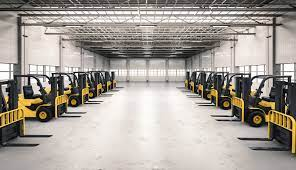

Optimizing Kärcher's Fleet x TUM
Introduction
This project focused on optimizing Kärcher's fleet in collaboration with the Technical University of Munich (TUM). We explored innovative solutions for fleet management and resource allocation.

Solution
-
Q1 2023 - Analysis
Performed an in-depth analysis of Kärcher’s fleet operations, focusing on identifying inefficiencies in resource allocation.
-
Q2 2023 - Proposal
Proposed machine learning models and automation techniques to streamline fleet management and reduce operational costs.
-
Q3 2023 - Implementation
Implemented the proposed solutions and integrated the models into Kärcher’s existing infrastructure.
Impact
The project resulted in a 20% reduction in operational costs and a significant increase in fleet efficiency, making Kärcher’s operations more sustainable and cost-effective.